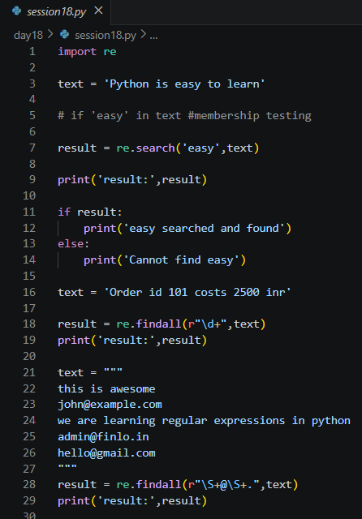
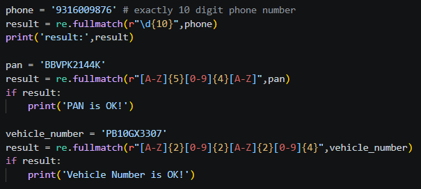
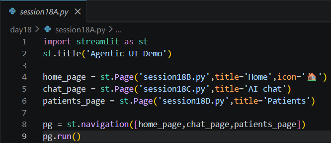
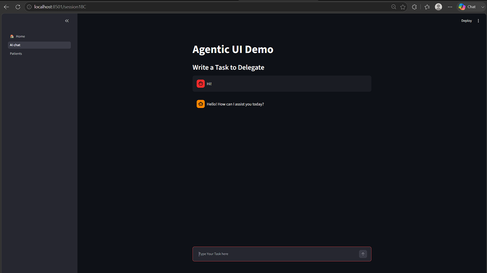
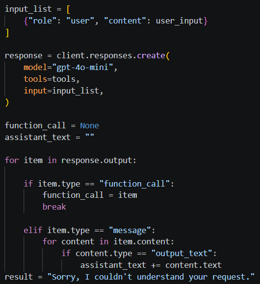
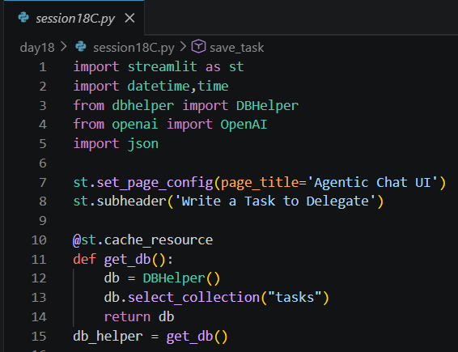
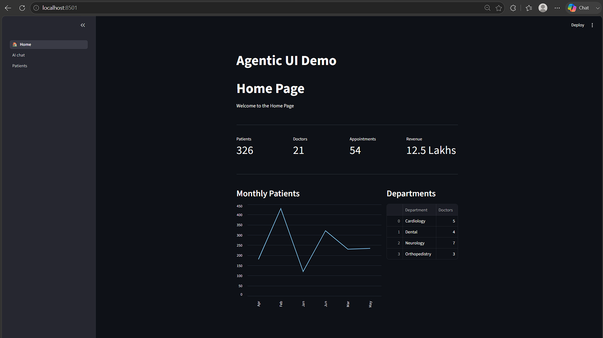

Date: 20th July 2026
Duration: 2 Hours
Training Company: Auribises Technologies
Trainer: Ishant Kumar
Day 18 introduced two important areas of Python development. The session began with Regular Expressions (Regex), where we learned how pattern matching simplifies searching, validating, and extracting structured information from text. Later, we continued building our Agentic AI application by creating a multi-page Streamlit dashboard and integrating OpenAI Function Calling with MongoDB to build an intelligent task management system.
The combination of text processing, AI reasoning, database operations, and modern user interfaces demonstrated how multiple Python technologies can be combined to build practical AI-powered applications.
We explored Python's re module to perform pattern matching on text. The session covered
functions such as re.search(), re.findall(), and re.fullmatch().
These functions allow developers to search for patterns, extract matching data, and validate whether an
input completely satisfies a required format.
Several practical examples demonstrated how regular expressions can simplify otherwise complex string-processing tasks while making programs more reliable and concise.

The trainer demonstrated how Regex can be used to extract useful information such as phone numbers, email addresses, vehicle registration numbers, and numeric values from larger blocks of text. We also validated structured inputs including Indian phone numbers, PAN card numbers, and vehicle registration formats using pattern matching.
A particularly interesting example combined multiple patterns into a single regular expression capable of extracting different types of information simultaneously. This showed how Regex can become a powerful tool for intelligent text processing and information extraction.

The second half of the session introduced Streamlit's multi-page navigation system. We created an application containing separate pages for a dashboard, AI chat interface, and patient management module. The dashboard displayed key performance metrics, charts, and tabular data using Streamlit components such as metrics, columns, charts, and dataframes.
This demonstrated how professional web applications can be organized into multiple pages while maintaining a clean and intuitive user experience.

The primary focus of the session was extending our Agentic AI application by integrating the OpenAI Responses API with MongoDB Atlas. Instead of relying on manually written conditions to understand user requests, the application now uses a Large Language Model to determine the user's intent and automatically invoke the appropriate backend function.
We defined multiple Python functions responsible for saving, listing, updating, and deleting tasks from MongoDB. These functions served as the backend logic, while the AI model acted as an intelligent controller capable of deciding which function should be executed based on natural language instructions.

A major concept introduced during the session was Function Calling. We created JSON tool schemas describing each available backend function, including their names, descriptions, parameters, and required fields. These tool definitions were supplied to the OpenAI model, enabling it to understand the application's available capabilities.
Whenever a user entered a request such as creating, updating, deleting, or listing tasks, the AI generated a structured function call containing the required arguments. The application parsed this response, executed the corresponding Python function, and returned the result to the user. This architecture allowed natural language to directly control backend operations while keeping the application modular and scalable.

The session also strengthened our understanding of database operations using the custom
DBHelper class. MongoDB Atlas was used as persistent storage for all tasks, while helper
methods handled document insertion, retrieval, updating, and deletion. Additional task metadata such as
creation time and status were automatically generated before storing new records.
By separating database operations into reusable helper functions, the application became easier to maintain and allowed the AI layer to remain independent of the underlying database implementation.

During the practical session, we built a complete AI-powered task management application capable of understanding natural language commands. We tested various scenarios including creating new tasks, displaying stored tasks, updating task details, and deleting completed tasks. The application combined Streamlit for the user interface, OpenAI for intelligent reasoning, and MongoDB Atlas for persistent storage.
We also explored Streamlit features such as session state, chat interfaces, typing animations, cached resources, and multi-page navigation, giving the application a more polished and interactive user experience.
No separate assignment was given during today's session. The entire class focused on building and improving the Agentic AI Task Management application by integrating OpenAI Function Calling, MongoDB Atlas, and Streamlit into a single working project.

re module.re.search(), re.findall(), and
re.fullmatch() for searching, extracting, and validating text.DBHelper class for
performing CRUD operations.Day 18 was one of the most practical sessions of the training because it combined several technologies that I had been learning over the past few days into a complete AI application. The introduction to Regular Expressions showed how complex text processing tasks such as validation and information extraction can be performed using concise pattern matching techniques.
The most exciting part of the session was implementing OpenAI Function Calling. Instead of manually writing conditional statements to identify user intent, the language model itself determined which backend function should be executed and generated the required arguments automatically. This demonstrated how Large Language Models can act as intelligent controllers for real-world software applications.
Building the multi-page Streamlit dashboard and integrating MongoDB Atlas further improved my understanding of full-stack AI application development. By the end of the session, I had a much clearer understanding of how frontend interfaces, databases, and AI models work together to create intelligent systems capable of performing useful real-world tasks through natural language interactions.
The next session will continue expanding our Agentic AI journey by introducing more advanced concepts and enhancements that will make our AI applications increasingly intelligent, interactive, and production-ready.